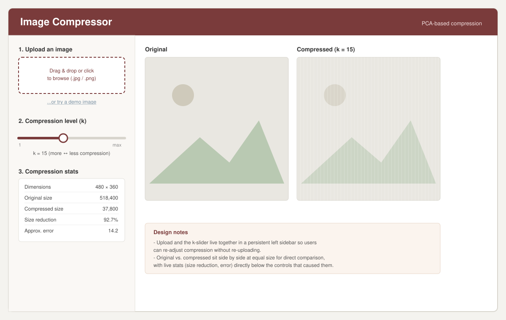

Design rationale
- Persistent left sidebar. Upload, the compression slider, and the live stats all live together on the left so a user can re-adjust k repeatedly without re-uploading or losing their place.
- Upload first, then compress. The controls are numbered top to bottom (1. upload, 2. choose k, 3. read the stats) to match the order someone would naturally use them in.
- Side-by-side comparison at equal size. The original and compressed image are shown next to each other, always rendered at the same size, so differences in sharpness are easy to judge without having to flip between two views.
- Immediate feedback. Compression stats (dimensions, size reduction, approximation error) sit directly under the slider that produced them, reinforcing the trade-off between k and quality as the user drags it.
- A demo image link next to the uploader lets someone try the app immediately, before they've picked a photo of their own.
This design was then implemented as a real Shiny app; see the project repository for the source and the live app link on Canvas.